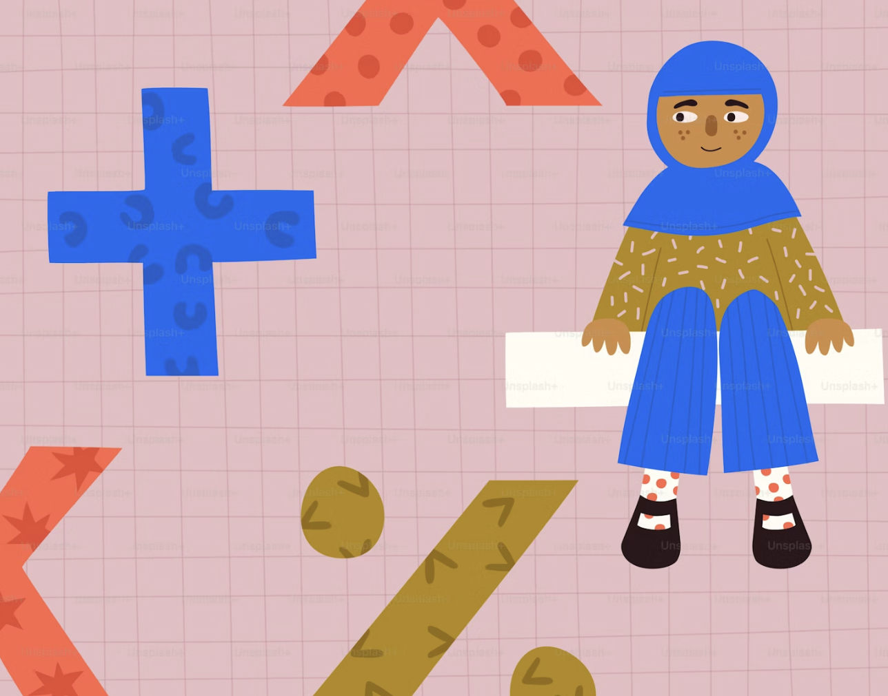

Our Educational Programs

Overview
RISE provides young girls in the Middle East with free, student-led educational programs designed to empower, encourage, and build confidence. Our programs are accessible to all as they are primarily virtual and free of cost. We encourage you to apply!
Summer 2026 Program
Our Summer Program is a week-long, online exploration course designed to help students discover various career paths. Each day focuses on a different sector, allowing participants to build practical skills and hear directly from professionals in the industry. Click here to fill out the application form.
Mentorship
The Mentorship program is an intensive, year-long, self-paced initiative in which you will be paired with a student mentor who will help guide you in building a passion project. Whether you want to launch a startup, a nonprofit, or a smaller community initiative, mentors are there to help turn your ideas into reality. (Form is on a rolling basis, apply anytime.)

Winter Seminar
The Winter Seminar helps students explore summer opportunities, connect with peers, and build essential networking skills. This foundational course is designed to set participants up for future success by focusing on leadership, collaboration, and team-based projects. Show Interest Today!